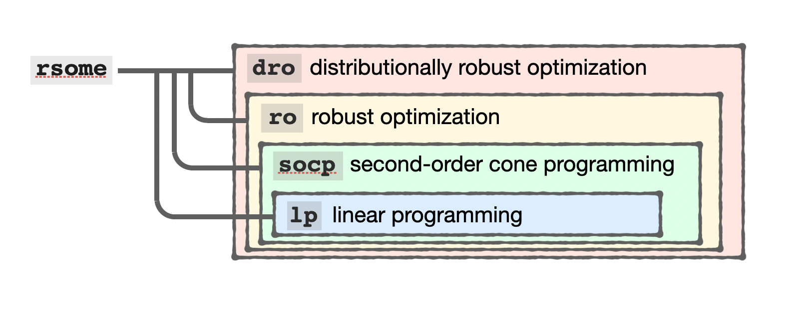

RSOME in Python
| Star | Watch | Fork |
| Home |
|---|
| User Guide |
| Examples |
| About |
Getting Started
RSOME is an open-source algebraic library for modeling generic optimization problems under uncertainty. It provides highly readable and mathematically intuitive modeling environment based on the state-of-the-art robust stochastic optimization framework.
This guide introduces the main components, basic data structures, and syntax rules of the RSOME package. For installations, please refer to our Home Page for more information.
Modeling Environments
The current version of RSOME provides four layers of modeling environments, as illustrated by the structure diagram below.

The lower two layers of RSOME modules provide modeling tools for deterministic linear and second-order cone (SOC) programs, which are the cornerstone for building the upper-level robust and distributionally robust optimization modules. In RSOME, all robust counterparts of upper-level robust and distributionally robust models are formulated into the lower-level deterministic problems before being sent to solvers.
A higher layer of RSOME module could address a more general class of problems compared with lower-layer ones. The top layer dro module for distributionally robust optimization, associated with the event-wise ambiguity sets proposed in Chen et al. (2020), is the most general framework among all. For example, classic robust optimization problems can be treated as special cases of a distributionally robust optimization problem where the ambiguity set, specifying only the support information, reduces to an uncertainty set; while deterministic problems are special cases of a robust optimization problem whose uncertainty set reduces to a known singleton. The ro module, although less general, provides tailored modeling tools specifically for robust optimization problems, thus it models uncertainty sets and formulates the worst-case objective function and robust constraints in a more concise and intuitive manner.
Though each layer of RSOME modules are targeting different types of optimization problems, they follow consistent syntax in defining variables, objective functions, and constraints. In this section, we will use the ro module as a general modeling environment for deterministic problems, and cases of robust optimization problems will be discussed in RSOME for robust optimization. The dro module is specially designed for distributionally robust optimization problems, and it is different from ro in specifying recourse adaptations and uncertainty/ambiguity sets. It will be introduced separately in RSOME for distributionall robust optimization.
Introduction to the rsome.ro Environment
Models
In RSOME, all optimization models are specified based on a Model type object. Such an object is created by the constructor Model() imported from the rsome.ro modeling environment.
from rsome import ro # import the ro modeling tool
model = ro.Model('My model') # create a Model object
The code above defines a new Model object model, with the name specified to be 'My model'. You could also leave the name unspecified and the default name is None.
Decision Variables and Linear Constraints
Decision variables of a model can be defined by the method dvar().
dvar(shape=(1,), vtype='C', name=None, aux=False) method of rsome.ro.Model instance
Returns an array of decision variables with the given shape
and variable type.
Parameters
----------
shape : int or tuple
Shape of the variable array.
vtype : {'C', 'B', 'I'}
Type of the decision variables. 'C' means continuous; 'B'
means binary, and 'I" means integer.
name : str
Name of the variable array
aux : leave it unspecified.
Returns
-------
new_var : rsome.lp.Vars
An array of new decision variables
Variables in RSOME can be formatted as N-dimensional arrays, which are consistent with the widely used NumPy arrays in the definition of dimensions, shapes, and sizes. Users could use the dvar() method of the Model object to specify the shape and type ('C' for continuous, 'B' for binary, and 'I' for general integer) of the decision variable array, as shown by the following examples.
x = model.dvar(3, vtype='I') # 3 integer variables as a 1D array
y = model.dvar((3, 5), 'B') # 3x5 binary variables as a 2D array
z = model.dvar((2, 3, 4, 5)) # 2x3x4x5 continuous variables as a 4D array
RSOME variables are also compatible with the standard NumPy array operations, such as element-wise computation, matrix calculation rules, broadcasting, indexing and slicing, etc. It thus enables users to define blocks of constraints with the array system. For example, the constraint system
\[\begin{align} &\sum\limits_{i\in[I]}b_ix_i = 1 && \\ &\sum\limits_{i\in[I]}A_{ji}x_i \leq c_j && j\in[J] \\ &\sum\limits_{j\in[J]}\sum\limits_{i\in I}y_{ji} \geq 1 &&\\ &\sum\limits_{i\in[I]}y_{ji} \geq 0 && j\in [J] \\ &A_{ji}x_i \geq 1 &&\forall j\in[J], i\in[I] \\ &A_{ji}y_{ji} + x_i \geq 0 && \forall j\in [J], i\in[I] \end{align}\]with decision variable \(\pmb{x}\in\mathbb{R}^I\) and \(\pmb{y}\in\mathbb{R}^{J\times I}\), as well as parameters \(\pmb{A}\in\mathbb{R}^{J\times I}\), \(\pmb{b}\in\mathbb{R}^I\), and \(\pmb{c}\in\mathbb{R}^J\), can be conveniently specified by the code segment below.
x = model.dvar(I) # define x as a 1D array of I variables
y = model.dvar((J, I)) # define y as a 2D array of JxI variables
b @ x == 1
A @ x <= c
y.sum() >= 1
y.sum(axis=1) >= 0
A * x >= 1
A*y + x >= 0
RSOME arrays can also be used in specifying the objective function of the optimization model. Note that the objective function must be one affine expression. In other words, the size attribute of the expression must be one, otherwise an error message would be generated.
model.min(b @ x) # minimize the objective function b @ x
model.max(b @ x) # maximize the objective function b @ x
Model constraints can be specified by the method st(), which means “subject to”. This method allows users to define their constraints in different ways.
model.st(A @ x <= c) # define one constraint
model.st(y.sum() >= 1,
y.sum(axis=1) >= 0,
A*y + x >= 0) # define multiple constraints
model.st(x[i] <= i for i in range(3)) # define constraints by a loop
Convex Functions and Convex Constraints
The RSOME package also supports several convex functions for specifying convex constraints. The definition and syntax of these functions are also consistent with the NumPy package.
-
abs()for absolute values: the functionabs()returns the element-wise absolute value of an array of variables or affine expressions. -
square()for squared values: the functionsquare()returns the element-wise squared values of an array of variables or affine expressions. -
sumsqr()for sum of squares**: the functionsumsqr()returns the sum of squares of a vector, which is a one-dimensional array, or an array with itssizeto be the same as maximumshapevalue. -
norm()for norms of vectors: the functionnorm()returns the first, second, or infinity norm of a vector. Users may use the second argumentdegreeto specify the degree of the norm function. The default value of thedegreeargument is 2. Examples of specifying convex constraints are provided below.
import rsome as rso
from numpy import inf
model.st(abs(x) <= 2) # constraints with absolute terms
model.st(rso.sumsqr(x) <= 10) # a constraint with sum of squares
model.st(rso.square(y) <= 5) # constraints with squared terms
model.st(rso.norm(y[:, 0]) <= 1) # a constraint with 2-norm terms
model.st(rso.norm(x, 1) <= y[0, 0]) # a constraint with 1-norm terms
model.st(rso.norm(x, inf) <= x[0]) # a constraint with infinity norm
Note that all functions above can only be used in convex constraints, so convex functions cannot be applied in equality constraints, and they cannot be used for concave inequalities, such as abs(x) >= 2 is invalid and gives an error message.
Standard Forms and Solutions
All RSOME models are transformed into their standard forms, which are then solved via the solver interface. The standard form can be retrieved by the do_math() method of the model object.
Model.do_math(primal=True)
Returns a SOCProg type object representing the standard form
as a second-order cone program. The parameter primal controls
the returned formula is for the primal or the dual problem.
You may use the do_math() method together with the show() method to display important information on the standard form, i.e., the objective function, linear and second-order cone constraints, bounds and variable types.
import rsome as rso
import numpy.random as rd
from rsome import ro
n = 3
c = rd.normal(size=n)
model = ro.Model()
x = model.dvar(n)
model.max(c @ x)
model.st(rso.norm(x) <= 1)
primal = model.do_math() # standard form of the primal problem
dual = model.do_math(primal=False) # standard form of the dual problem
The variables primal and dual represent the standard forms of the primal and dual problems, respectively.
primal
Second order cone program object:
=============================================
Number of variables: 8
Continuous/binaries/integers: 8/0/0
---------------------------------------------
Number of linear constraints: 5
Inequalities/equalities: 1/4
Number of coefficients: 11
---------------------------------------------
Number of SOC constraints: 1
dual
Second order cone program object:
=============================================
Number of variables: 5
Continuous/binaries/integers: 5/0/0
---------------------------------------------
Number of linear constraints: 4
Inequalities/equalities: 0/4
Number of coefficients: 7
---------------------------------------------
Number of SOC constraints: 1
More details on the standard forms can be retrieved by the method show(), and the problem information is summarized in a pandas.DataFrame table.
primal.show()
| x1 | x2 | x3 | x4 | x5 | x6 | x7 | x8 | sense | constant | |
|---|---|---|---|---|---|---|---|---|---|---|
| Obj | 1 | 0 | 0 | 0 | 0 | 0 | 0 | 0 | - | - |
| LC1 | 0 | 1 | 0 | 0 | -1 | 0 | 0 | 0 | == | -0 |
| LC2 | 0 | 0 | 1 | 0 | 0 | -1 | 0 | 0 | == | -0 |
| LC3 | 0 | 0 | 0 | 1 | 0 | 0 | -1 | 0 | == | -0 |
| LC4 | 0 | 0 | 0 | 0 | 0 | 0 | 0 | 1 | == | 1 |
| LC5 | -1 | 0.585058 | 0.0693541 | -0.7489 | 0 | 0 | 0 | 0 | <= | 0 |
| QC1 | 0 | 0 | 0 | 0 | 1 | 1 | 1 | -1 | <= | 0 |
| UB | inf | inf | inf | inf | inf | inf | inf | inf | - | - |
| LB | -inf | -inf | -inf | -inf | -inf | -inf | -inf | 0 | - | - |
| Type | C | C | C | C | C | C | C | C | - | - |
dual.show()
| x1 | x2 | x3 | x4 | x5 | sense | constant | |
|---|---|---|---|---|---|---|---|
| Obj | 0 | 0 | 0 | -1 | -0 | - | - |
| LC1 | 0 | 0 | 0 | 0 | -1 | == | 1 |
| LC2 | 1 | 0 | 0 | 0 | 0.585058 | == | 1 |
| LC3 | 0 | 1 | 0 | 0 | 0.0693541 | == | 1 |
| LC4 | 0 | 0 | 1 | 0 | -0.7489 | == | 1 |
| QC1 | 1 | 1 | 1 | -1 | 0 | <= | 0 |
| UB | inf | inf | inf | 0 | 0 | - | - |
| LB | -inf | -inf | -inf | -inf | -inf | - | - |
| Type | C | C | C | C | C | - | - |
The standard form of a model can be solved via calling the solve() method of the model object. Arguments of the solve() method are listed below.
solve(solver=None, display=True, export=False, params={}) method of rsome.ro.Model instance
Solve the model with the selected solver interface.
Parameters
----------
solver : {None, lpg_solver, grb_solver, msk_solver}
Solver interface used for model solution. Use default solver
if solver=None.
display : bool
Display option of the solver interface.
export : bool
Export option of the solver interface. A standard model file
is generated if the option is True.
params : dict
A dictionary that specifies parameters of the selected solver.
So far the argument only applies to Gurobi, CPLEX, and MOSEK.
It can be seen that the user needs to specify the solver argument for selecting the solver interface when calling the solve() method. The current version RSOME uses the default LP solver if solver=None or solver=lpg_solver. Warnings will be raised if second-order cone constraints or integer variables appearing in the model. For such models, please use other solvers by specifying the solver parameter to be the values in the table below.
| Solver | License type | RSOME interface | Integer variables | Second-order cone constraints |
|---|---|---|---|---|
| scipy.optimize | Open-source | lpg_solver |
No | No |
| CyLP | Open-source | clp_solver |
Yes | No |
| OR-Tools | Open-source | ort_solver |
Yes | No |
| Gurobi | Commercial | grb_solver |
Yes | Yes |
| MOSEK | Commercial | msk_solver |
Yes | Yes |
| CPLEX | Commercial | cpx_solver |
Yes | Yes |
The model above involves second-order cone constraints, so we could use either Gurobi or Mosek to solve it. The interfaces for these solvers are imported by the following commands.
from rsome import grb_solver as grb
from rsome import msk_solver as msk
The interfaces can be then used to attain the solution.
model.solve(grb)
Being solved by Gurobi...
Solution status: 2
Running time: 0.0009s
model.solve(msk)
Being solved by Mosek...
Solution status: optimal
Running time: 0.0210s
The other two arguments control the display and export options of the solution. Once the solution completes, you may use the command model.get() to retrieve the optimal objective value. The optimal solution of the variable x can be attained as an array by calling x.get(). No optimal value or solution can be retrieved if the problem is infeasible, unbounded, or terminated by a numeric issue.
Finally, parameters of the Gurobi, MOSEK, or CPLEX solver can be specified by the dict type argument params in the format of {<param1>: <value1>, <param2>: <value2>, <param3>: <value3>..., }. For example, the following code solves the problem using Gurobi while configuring the parameter LogToConsole to be True so that the log information is displayed in the coding Console.
model.solve(grb, # Use Gurobi as the solver
params={'LogToConsole': True}) # Set LogToConsole to be True
For Gurobi, you may find the parameter names and their values from Parameters. Parameter information on MOSEK is given by Parameters (alphabetical list sorted by type). CPLEX solver parameters can be found from List of CPLEX parameters. Please make sure that you are specifying parameters with the correct data type, otherwise error messages might be raised.
Application Examples
Mean-Variance Portfolio
Integer Programming for Sudoku
Optimal DC Power Flow
Reference
Chen, Zhi, Melvyn Sim, Peng Xiong. 2020. Robust stochastic optimization made easy with RSOME. Management Science 66(8) 3329–3339.